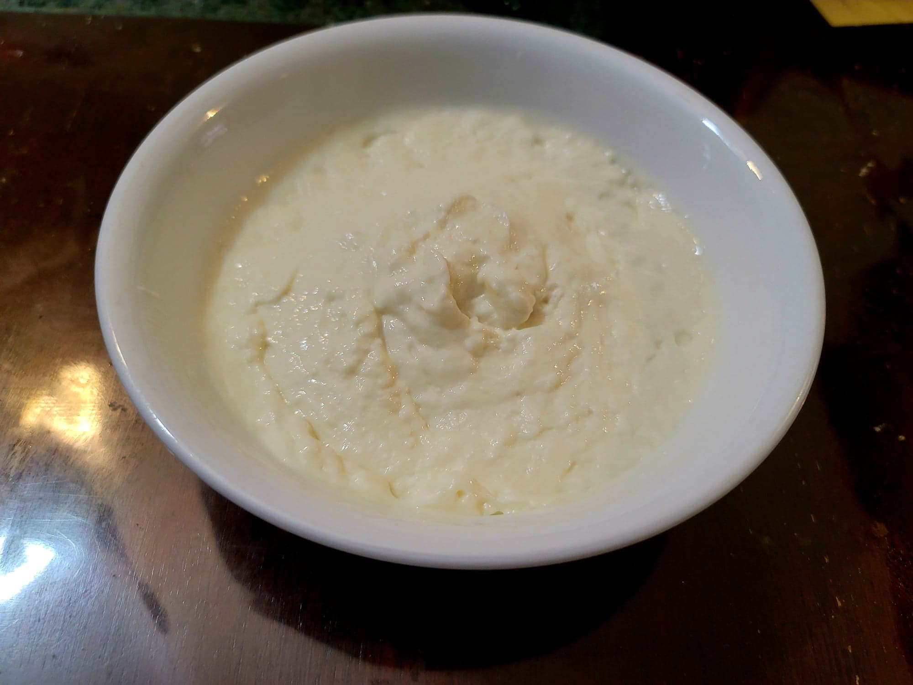

Ashta

Ingredients:
- 6 cups (1.36 kg) Milk
- 3 tbsp (35 g) Lemon juice or White vinegar
- 6 tbsp (40 g) Cornstarch
- 3 tbsp (40 g) sugar
- 4 1/2 tbsp (55 g) Heavy cream
- 2 tsp Rose water AND/OR 2 tsp Orange blossom water
Instructions:
- Add 4 1/2 cups of milk to a large sauce pan over medium/medium-low heat. Slowly bring to just under a boil, about 190 degrees Fahrenheit, while stirring often to prevent scolding the milk.
- Then remove from the heat and slowly stir in the lemon juice/vinegar. The milk will curd.
- Strain the milk through a cheese cloth and squeeze out any excess liquid. Reserve.
- To the same saucepan, add in the remaining milk and cornstarch. Whisk until there are no lumps remaining and then whisk in the sugar and heavy cream.
- Heat over medium heat and whisk constantly. Heat while whisking until it thickens. Then remove from heat.
- Let cool to room temperature. Then agressively whisk in the milk curds and the rose water/orange blossom water. Alternatively, blend in the curds and flower water for a smoother ashta.
- Transfer to a fridge to set and chill completely before using. Makes about 2 cups.